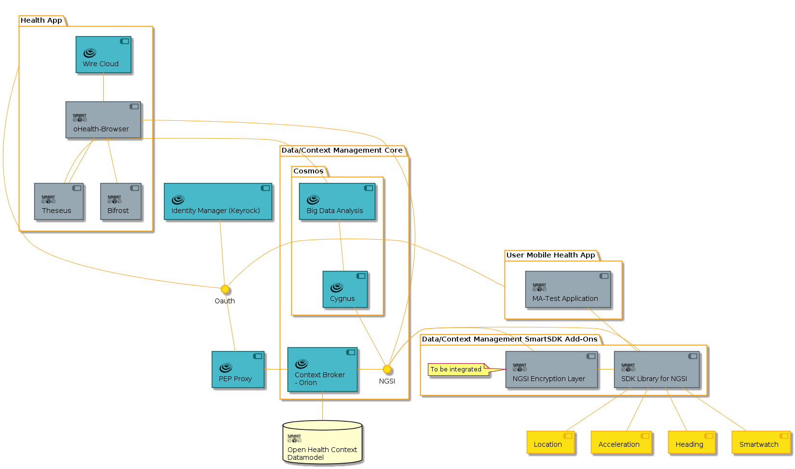

Arquitectura
La arquitectura de los servicios más comunes requeridos en términos de una aplicación de detección de datos.
Tenga en cuenta que la aplicación móvil se utilizá como herramienta para recopilar datos de sensores de dispositivos móviles (por ejemplo, acelerómetro, orientación), mientras que los pacientes realizan un conjunto de actividades físicas. Las aplicaciones generadas están destinadas a ser instaladas en un smartphone/smartwatch que será usado por el participante.
En este contexto, los datos se han recopilado en cada dispositivo y eventualmente se enviarán a la nube de FIWARE usando los verbos del respectivo RESTful. Los datos se conectarán a Orion Context Broker a través del componente PEP (police Enforcement Point), que invocará un mecanismo de filtrado para asegurar que sólo se analizarán los datos esperados. Una vez que los datos han sido almacenados en el Cosmos Big Data GE y procesados por Theseus (un componente que analiza pequeñas cantidades de datos), los datos se recuperan mediante Bifrost; que sirve como intermediario que trasporta parámetros de consulta desde el Wirecloud GE. Finalmente los datos recuperados del cosmos GE, se envían de vuelta a Bifrost con e fin de ser exhibidos en sus Widgets correspondientes.

Las principales contribuciones del escenario se centran en tres componentes:
Theseus. Una implementación basada en Python de software de código abierto para facilitar el análisis de datos. No trata de competir con la Data Analytic GE disponible, sino complementarla para propósitos rápidos de prototipado usando bibliotecas públicas, como SciPy.
Bifrost. Una implementación de software desarrollada en Python utilizando el framework Flink para conectar widgets con componentes de datos históricos. Bifrost sirve como intermediario que transporta parámetros de consulta desde el Wirecloud GE al Cosmos GE a través de un intérprete (ilustrado analógicamente como un puente). Una vez que los datos se recuperan del Cosmos GE, se envían al puente y, a continuación, los datos se analizan en formato NGSI y se envían de nuevo al Wirecloud GE; así que se puede mostrar sobre los widgets correspondientes.
El código fuente se puede encontrar en GitHub: Bifrost
oHealth-Browser. Un Widget de software desarrollado para manejar tres módulos diferentes: participantes, prueba física y parámetros de interés. En conjunto, las funciones estan integradas en un solo componente que puede extenderse para cubrir una gama más amplia de servicios. La interfaz gráfica de Usuario se personaliza basándose en la información básica, como la dirección IP del servicio remoto (por ejemplo Cosmos o un servidor de terceros ), Módulo de servicio ( es decir, participantes, prueba física o parámetros de interés) y atributos que se deben recuperar entre otros.
El código fuente se puede encontrar en GitHub: oHealth-Browser